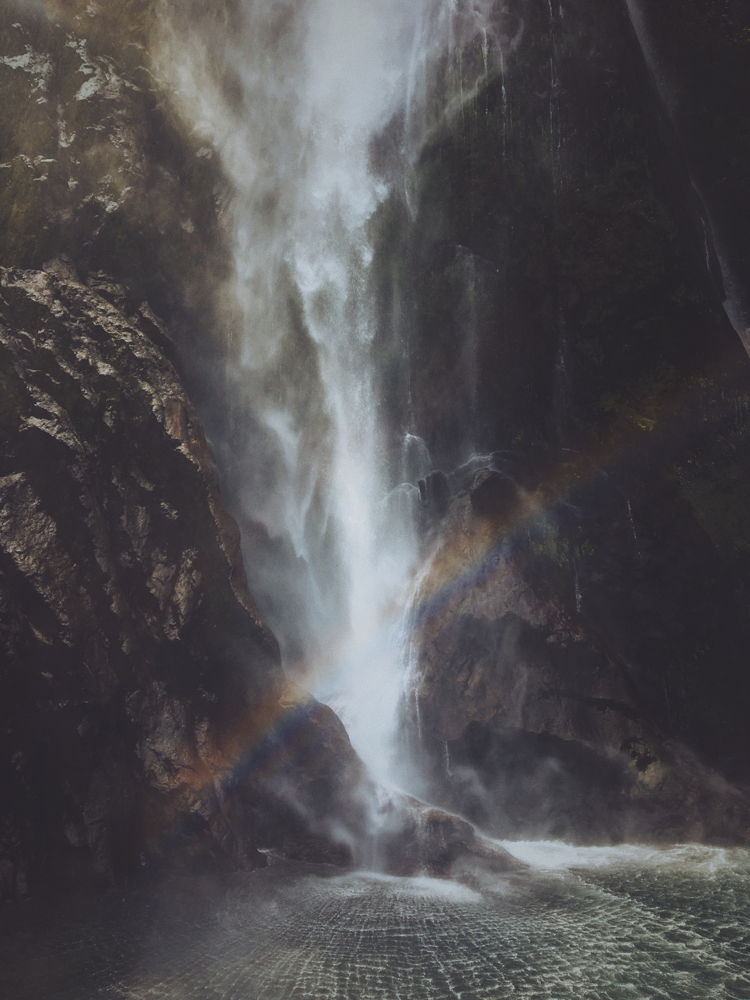

잠깐, 무력은 왜 들어가있는 거죠?
평화의 의미와 평화 10원칙.
평화 (平和):
전쟁, 분쟁 또는 일체의 갈등이 없이 평온함.

반둥회의, 평화10원칙의 내용
1. 기본적 인권과 국제연합 헌장의 목적과 원칙 존중
2. 주권과 영토 보전 존중
3. 인종 및 모든 국가의 평등
4. 내정의 불간섭
5. 국제연합 헌장에 입각한 개별적, 집단적 자위권의 존중
6. 강대국의 이익을 위한 집단적 방위 결정에 불참가
7. 상호 불침략
8. 평화적 방법에 의한 국제 분쟁의 해결
9. 상호 이익과 협력의 촉진
10. 정의와 국제 의무의 존중